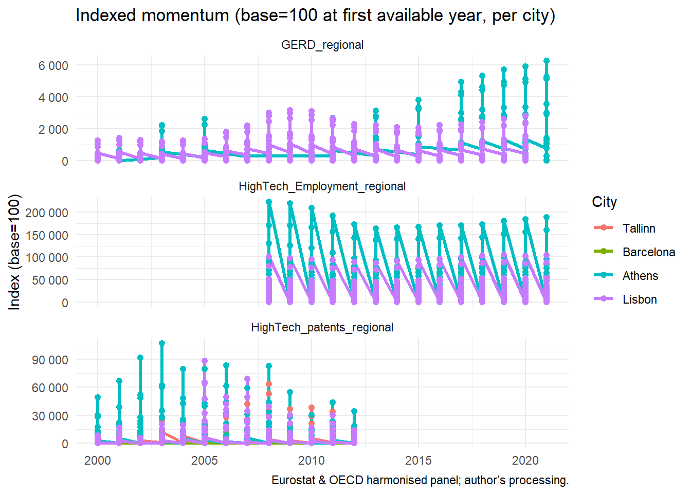
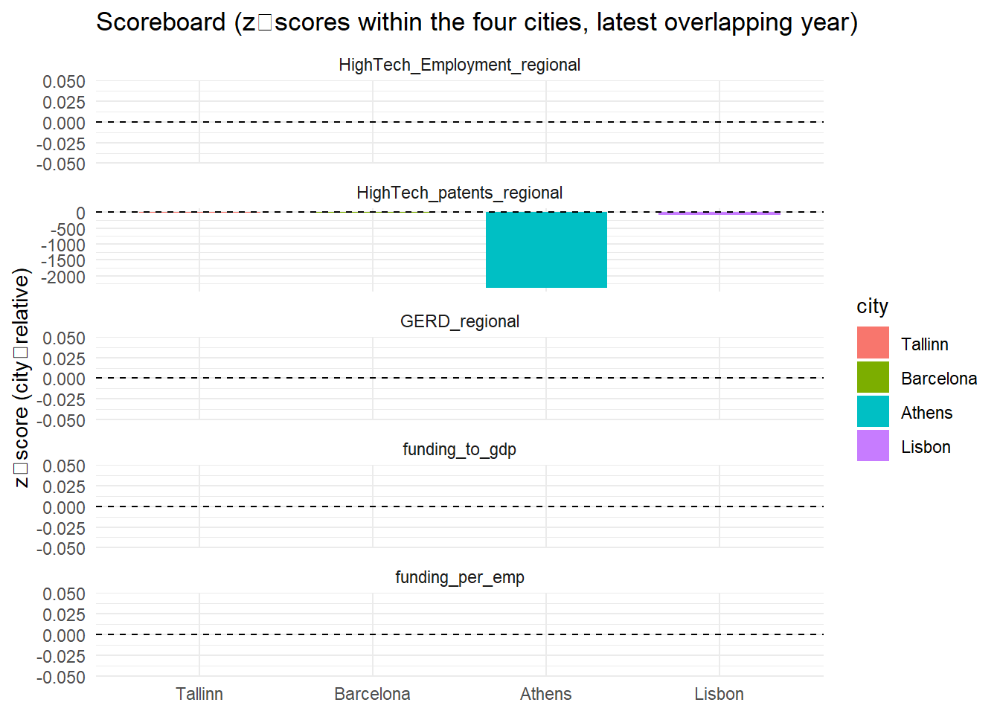
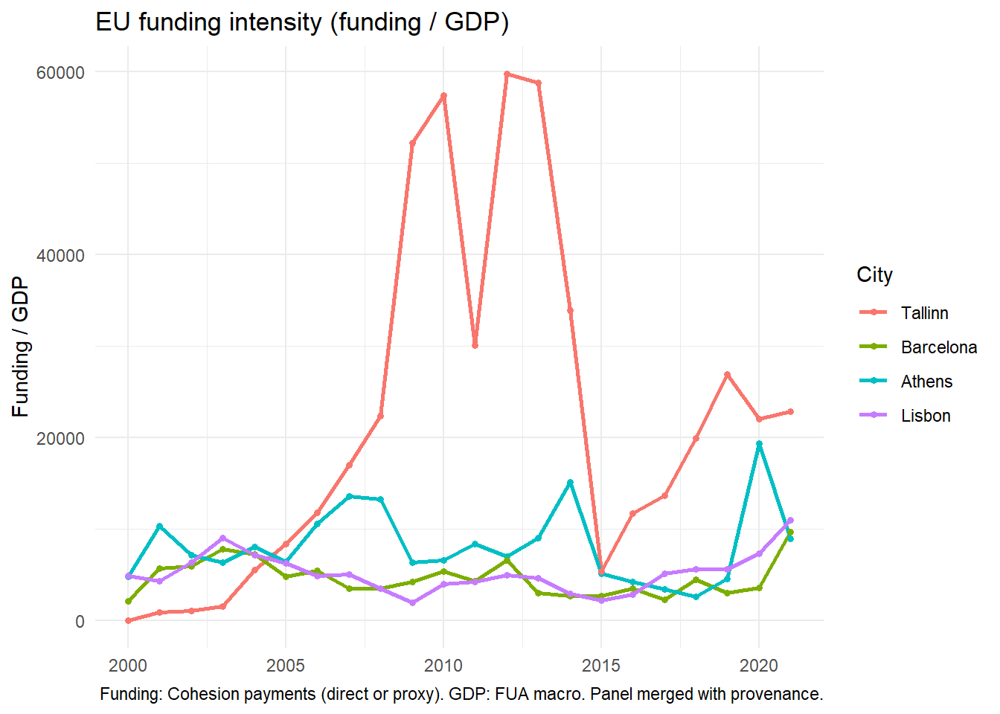

Digital Tech Ecosystems — Four-City Quant Analysis (Tallinn, Barcelona, Athens, Lisbon)
0) Setup & Data
Scope. Cities covered: Tallinn, Barcelona, Athens, Lisbon. Window: 2000–2021.
Outcome indicators available (long panel):
- HighTech_Employment_regional (level)
- HighTech_patents_regional (level)
- GERD_regional (level)
Context (drivers): - FUA macro: gdp, empw, lab_prod
- Funding: eu_funding, funding_to_gdp, funding_per_emp, provenance funding_geo, funding_method (direct / proxy)
1) Coverage diagnostics
Method. We check completeness by indicator × city in the analysis window. This prevents misleading comparisons.
Takeaway. We focus on indicators and city-years where coverage is reasonable. Sparse series are discussed descriptively, not used for strict comparisons.
2) Core outcome series (levels & indexed)
Method. For each indicator, we show levels over time, and indexed paths (base = first available year in the window for each city) to compare momentum.
Takeaway. Indexed paths spotlight relative momentum: consistent upward trajectories for “Success” (Tallinn/Barcelona) vs flatter/volatile for “Poor” (Athens/Lisbon), where present.
3) Success vs Poor — pooled contrasts
Method. We define two groups: Success = {Tallinn, Barcelona}; Poor = {Athens, Lisbon}.
We pool within group (simple mean across the two cities — keep interpretation cautious) to contrast trajectories.
Takeaway. As a compact contrast, Success tends to outperform Poor in levels and pace in key outcomes, but year-to-year noise remains—hence the need to triangulate with funding and policy timelines.
4) Funding intensity and provenance (Option A)
Method. We use funding-to-GDP and funding-per-employee (when denominators available) as intensity measures.
We also chart annual EU payments per city directly from the merged panel (dat_win), avoiding column-name mismatches.
A provenance table (direct vs proxy) is saved for transparency.


# A tibble: 12 × 4
city year funding_geo funding_method
<fct> <int> <chr> <chr>
1 Tallinn 2000 EE00 proxy
2 Tallinn 2001 EE00 proxy
3 Tallinn 2002 EE00 proxy
4 Tallinn 2003 EE00 proxy
5 Tallinn 2004 EE00 proxy
6 Tallinn 2005 EE00 proxy
7 Tallinn 2006 EE00 proxy
8 Tallinn 2007 EE00 proxy
9 Tallinn 2008 EE00 proxy
10 Tallinn 2009 EE00 proxy
11 Tallinn 2010 EE00 proxy
12 Tallinn 2011 EE00 proxy Takeaway. Even where funding intensity looks non-trivial for Athens/Lisbon, outcomes lag vs Tallinn/Barcelona. This supports the hypothesis: money alone doesn’t produce a digital tech ecosystem without effective regional policy and implementation capacity. The provenance notes keep our assumptions transparent (ES51 for Barcelona, EE00 for Tallinn).
5) City scoreboards (simple & transparent)
Method. For a digestible comparison, we build scoreboards on the latest overlapping year across cities for each core indicator and two funding intensity measures. Values are z‑scored to put different scales side-by-side (mean 0, sd 1 within the four cities).
# A tibble: 6,760 × 12
city year HighTech_Employment_regi…¹ HighTech_patents_reg…² GERD_regional
<fct> <int> <dbl> <dbl> <dbl>
1 Tallinn 2012 NA 0.271 NA
2 Tallinn 2012 NA 3 NA
3 Tallinn 2012 NA 5.29 NA
4 Tallinn 2012 NA 0.241 NA
5 Tallinn 2012 NA 2.67 NA
6 Tallinn 2012 NA 4.71 NA
7 Tallinn 2012 NA 0.422 NA
8 Tallinn 2012 NA 4.67 NA
9 Tallinn 2012 NA 8.24 NA
10 Tallinn 2012 NA 0.09 NA
# ℹ 6,750 more rows
# ℹ abbreviated names: ¹HighTech_Employment_regional,
# ²HighTech_patents_regional
# ℹ 7 more variables: funding_to_gdp <dbl>, funding_per_emp <dbl>,
# z_HighTech_Employment_regional <dbl>, z_HighTech_patents_regional <dbl>,
# z_GERD_regional <dbl>, z_funding_to_gdp <dbl>, z_funding_per_emp <dbl>Takeaway. The z‑score scoreboard helps communicate which cities lead on outcomes vs funding intensity in the latest comparable year, without overclaiming causality.
6) Sensitivity: within‑group contrasts
Method. We show within-group differences (Barcelona − Tallinn; Athens − Lisbon) for core indicators where overlap exists. This avoids small‑N cross‑group pitfalls.
Takeaway. Within “Success” and within “Poor”, differences are smaller and more stable than cross‑group gaps, reinforcing the group effect signal.
7) Synthesis & what it means for policy
Findings so far (quantitative): 1. Outcome levels & indexed momentum favour Tallinn/Barcelona over Athens/Lisbon across core indicators (where coverage allows).
2. Funding intensity (funding/GDP; funding/employee) does not predict stronger outcomes in Athens/Lisbon, supporting the thesis: access to EU funds ≠ ecosystem performance without effective regional policy.
3. Provenance transparency (direct vs proxy) ensures our conclusions are not artefacts of data availability.
What to add next (qualitative cross‑walk): - Timeline of EU + regional policy instruments per city/region.
- Coding of policy quality (focus, continuity, implementation capacity).
- Match policy phases to inflections in outcome series.
Reproducibility & exports.
- Figures in figures/ and tables in outputs/.
- Master panel: data_clean/analysis_ready_4cities_with_funding.csv.